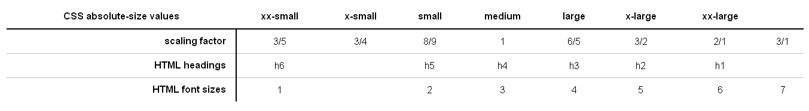

font简写属性
font:font-style,font-variant,font-weight,font-stretch,font-size/line-height,font-family
font:italic 700 small-caps 22px/1.8 "Trebuchet MS", Arial, Helvetica, sans-serif;前3个属性可有可无，之间的顺序随意，不过都要在字体大小前面，后两个属性必须有，且位置不能颠倒，行高的属性倒是可有可无。
有继承，简写属性，应用于所有元素
同时写2个简写属性是不能继承的，
同时写2个简写属性是不能继承的，之后写的单个属性是可以继承的，这里的字体为什么会变大是因为，h1-h6的字体和外边距默认单位是em，所以继承了祖先的大小字体变得更大的，外边距也变得更大了。
少用简写属性，不过也可以用简写属性来消灭继承属性。
font-family
初始值：由用户代理决定
应用于：所有元素
继承：有
动画：无
font-family:"Palatino Linotype", "Book Antiqua", "Microsoft YaHei", serif;不论中文英文都可以直接写，有空格隔开的需要用引号，单双引号都可以。
aaaaaa即使设了固定字体大小，但字体不一样，实际的高度也不一样。
font-weight
初始值：normal
应用于：所有元素
继承：有
动画：无
font-weight:normal,bold,bolder,lighter,100,200,300,400,500,600,700,800,900
font-weight一共有9个等级100-900,400=normal，700=bold，bolder和lighter这2种粗细等级还是要根据本身的字体来的，在根据字体粗细的情况下往上在抬个等级，或往下在抬个等级，就像字体大小的larger和smaller一样。
font-style
初始值：normal
应用于：所有元素
继承：有
动画：无
font-style:normal,italic,oblique
font-size
初始值：medium
应用于：所有元素
继承：有
动画：有

font-variant
line-height
font-size有很多单位，px，em，%，这几个比较重要，em，%根据父元素的字体大小来计算。
关键字有很多，貌似都不怎么用。larger和smaller和字体的更粗更细属性是一样的会在原来的基础上递增或递减，而其他关键字只是一个绝对数值。
字体大小设0，em框没有高度了，文档中消失了。
a
整站有哪些字体大小是一样的，占的比例如何，如何合理的这是这3个单位。
font-variant就是把小写的英文字母变大写。
text-decoration简写属性
text-decoration:text-decoration-line,text-decoration-style,text-decoration-color
text-decoration-line
初始值：none
应用于：所有元素
继承：无
动画：无
line-through,blink,overline,underline
text-decoration-line:line-through overline underline;能连着写
text-decoration-color
初始值：继承字体颜色
应用于：所有元素
继承：无
动画：有
text-decoration-color:yellow;颜色不能连着写
text-decoration-style
初始值：solid
应用于：所有元素
继承：无
动画：无
solid,double,dotted,dashed,wavy
solid,double,dotted,dashed,wavy不能连着写
text-decoration的效果都是属于内容区里面的，不像边框
text-decoration是跟着文本走的，字体为零了，她也就看不见了
虽然没有继承性但为什么里面也有效果虽然没有继承性但为什么里面也有效果我只能这样理解，有字就有效果，只不过这效果是写的那个属性所在的元素的效果，并不是后代真正的效果，虽然看上去是那样。
原来他是个简写属性，不能叠加，只能覆盖，同时3条线的效果
她的粗细还是根据字体大小来的
文本自身属性
当边框用
text-shadow
初始值：none
应用于：所有元素
继承：有
动画：有
祖先元素后代元素
很box-shadow一样，他同样也能写许多阴影，用逗号隔开，写在最前面的在最上面。
模糊值颜色值可以不写，模糊不写就是不模糊，颜色不写就是字体的颜色。颜色和偏移值可以任意顺序
text-shadow:10px 10px #ccc;
text-shadow:#999 1em 10px;
文本自身属性
除了能设置字体阴影外好像不能干别的了
text-transform
初始值：none
应用于：所有元素
继承：有
动画：无
text-transform:none,capitalize,uppercase,lowercase,full-width
capitalize：开头字母大写
LOWERCASE：全部小写
uppercase：全部大写
全宽度：abcdefghijklmnopqrstuvwxyz0123456789
文本自身属性
除了能设置小型大写字母外好像不能干别的了
中文网站很少用